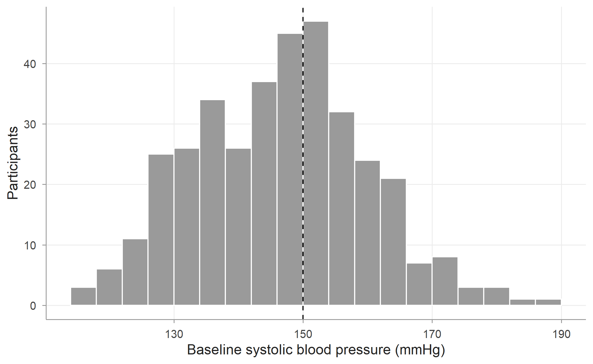
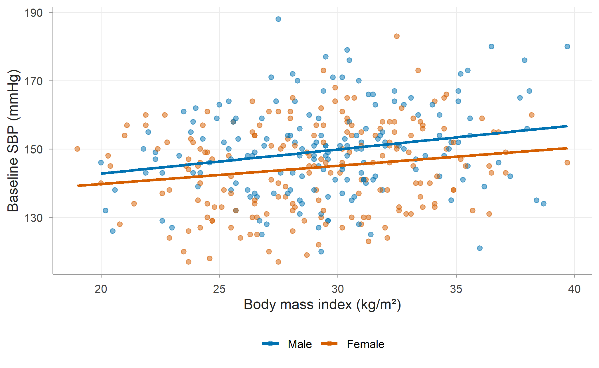
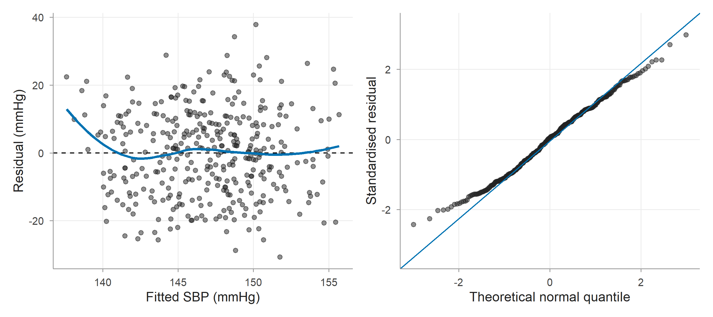
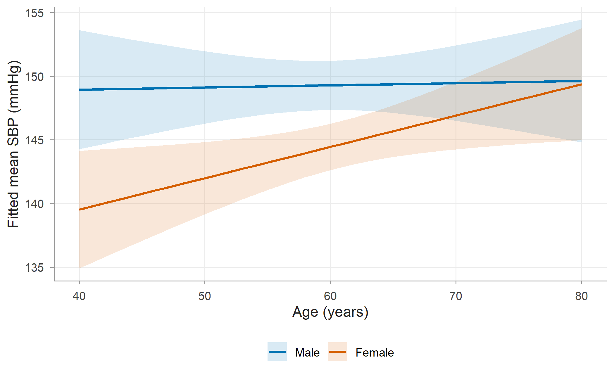
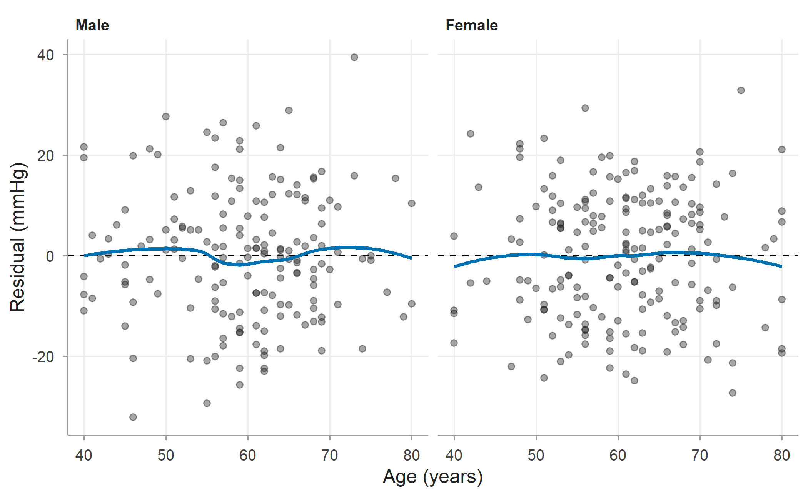
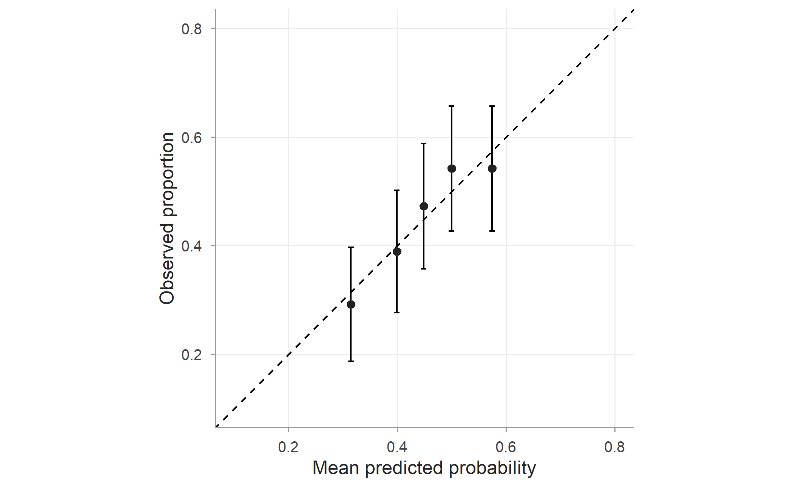
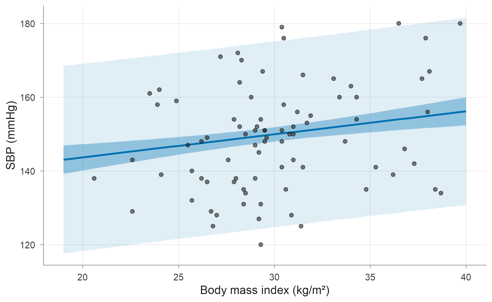

source(here::here("R", "setup.R"))
walk_base <- load_walk("baseline")Foundations refresher: R and regression
Every method in this course is a regression model with something added to cope with repeated measurements. A linear mixed model is a linear regression with extra terms for people; a generalized estimating equation is a logistic or Poisson regression with corrected standard errors. If the ordinary versions are secure, the longitudinal versions are much easier to learn. This module refreshes the R workflow and the regression ideas that the rest of the course takes for granted: reading data with relative paths, summarising and plotting with dplyr and ggplot2, fitting and interpreting linear and logistic regression, interactions and centring, residual checks, and the difference between a confidence interval and a prediction interval. All the analyses here use one row per participant, so they are cross-sectional by design. The module ends by showing why that one-row-per-person assumption breaks down as soon as the same people are measured more than once.
Learning outcomes
By the end of this module you will be able to:
- 0.1 Open the course R project, load data with relative paths and inspect data frames with
dplyr. - 0.2 Fit linear and logistic regression models in R and interpret each coefficient, its confidence interval and its p-value in the units of the outcome.
- 0.3 Specify and interpret an interaction between a categorical and a continuous predictor.
- 0.4 Produce and interpret residual-versus-fitted and normal Q–Q plots, and name the assumption each one checks.
- 0.5 Explain the difference between a confidence interval for a mean and a prediction interval for a new observation.
Prerequisites
None. This is the entry module. It assumes you have met descriptive statistics, confidence intervals, hypothesis tests and simple linear regression at some point, even if not recently. Participants who are confident with all five outcomes above can take the Module 0 knowledge check and go straight to Module 1.
WarningSimulated data
All examples use simulated data from fictional studies. Results illustrate methods; they are not empirical findings.
Working in R for this course
The course R project and relative paths
The course materials live in one folder that contains an RStudio project file, LDA_course.Rproj. Opening that file (double-click it, or use File > Open Project in RStudio) starts R with the working directory set to the project root. Everything in the course then refers to files by their position inside the project, never by a path that only exists on one computer.
The here package does this reliably. here::here("data", "walk_baseline.csv") builds the full path to data/walk_baseline.csv starting from the project root, wherever the project happens to sit on your disk and whichever subfolder the current script or Quarto document is in. That is why every script and document in the course begins with the same line:
source(here::here("R", "setup.R"))setup.R loads the course packages, sets the plotting theme and defines a small set of helper functions, such as load_walk(). You should never need setwd(). A script that calls setwd("C:/Users/me/Desktop/course") will fail on every other computer, including yours after you move the folder.
Reading data
The WALK study is the course’s core dataset: a fictional three-arm randomised trial of a community walking programme for adults with raised blood pressure, with 360 participants at 8 clinics. The file walk_baseline.csv has one row per participant. You can read it directly with readr:
walk_raw <- read_csv(here("data", "walk_baseline.csv"), show_col_types = FALSE)
walk_raw#> # A tibble: 360 × 11
#> id clinic arm age sex bmi rand_date sbp0 steps0 dropout
#> <chr> <dbl> <chr> <dbl> <chr> <dbl> <date> <dbl> <dbl> <lgl>
#> 1 W001 8 EP 69 Male 32.8 2024-07-29 150 4.5 FALSE
#> 2 W002 5 SP 64 Male 37.9 2024-10-28 176 7.5 TRUE
#> 3 W003 4 UC 52 Female 26.3 2024-10-31 125 11.2 FALSE
#> 4 W004 5 EP 69 Female 28.8 2024-03-06 145 7.2 FALSE
#> 5 W005 5 UC 53 Male 31.2 2024-04-03 140 7 FALSE
#> 6 W006 1 SP 74 Female 24.6 2024-02-05 118 9.5 FALSE
#> 7 W007 8 SP 41 Male 29.9 2024-02-01 141 4.5 FALSE
#> 8 W008 2 EP 66 Female 24.3 2024-10-30 157 4.9 FALSE
#> 9 W009 4 SP 49 Female 27.8 2024-11-15 136 5.1 FALSE
#> 10 W010 8 SP 74 Female 30.4 2024-03-13 165 3.9 FALSE
#> # ℹ 350 more rows
#> # ℹ 1 more variable: last_month_sched <dbl>The printout tells you the dimensions (360 rows, 11 columns) and the type of each column. Notice that arm and sex are read as character strings. For modelling we want them as factors with a deliberate reference level: usual care (UC) first for arm, and male first for sex. The course loader does this for you, and it is what we use from now on:
walk_base <- load_walk("baseline")
str(walk_base[, c("id", "arm", "sex", "age", "bmi", "sbp0", "dropout")])#> tibble [360 × 7] (S3: tbl_df/tbl/data.frame)
#> $ id : chr [1:360] "W001" "W002" "W003" "W004" ...
#> $ arm : Factor w/ 3 levels "UC","SP","EP": 3 2 1 3 1 2 2 3 2 2 ...
#> $ sex : Factor w/ 2 levels "Male","Female": 1 1 2 2 1 2 1 2 2 2 ...
#> $ age : num [1:360] 69 64 52 69 53 74 41 66 49 74 ...
#> $ bmi : num [1:360] 32.8 37.9 26.3 28.8 31.2 24.6 29.9 24.3 27.8 30.4 ...
#> $ sbp0 : num [1:360] 150 176 125 145 140 118 141 157 136 165 ...
#> $ dropout: logi [1:360] FALSE TRUE FALSE FALSE FALSE FALSE ...levels(walk_base$arm)#> [1] "UC" "SP" "EP"load_walk("baseline") returns the same rows with arm, sex and clinic stored as factors. The first level of a factor is the reference category in a regression, which is why the order of levels() matters.
Inspecting and transforming data with dplyr
Five dplyr verbs cover most data handling in this course. Each takes a data frame and returns a data frame, so they can be chained with the native pipe |>, which passes the result on the left as the first argument of the function on the right.
filter()keeps rows that meet a condition.select()keeps or drops columns.mutate()creates or changes columns.group_by()withsummarise()computes summaries within groups.arrange()sorts rows;count()tabulates.
Here they are in use. First we create the derived variables that the course uses throughout. Age is centred at 60 years and expressed per 10 years (age10), BMI is centred at 29 kg/m² (bmi_c), and hyp150 flags a baseline systolic blood pressure (SBP) of at least 150 mmHg.
walk_base <- walk_base |>
mutate(
age10 = (age - 60) / 10,
bmi_c = bmi - 29,
hyp150 = as.integer(sbp0 >= 150)
)
walk_base |>
group_by(arm) |>
summarise(
n = n(),
mean_age = mean(age),
pct_women = 100 * mean(sex == "Female"),
mean_sbp0 = mean(sbp0),
sd_sbp0 = sd(sbp0),
pct_150 = 100 * mean(hyp150)
)#> # A tibble: 3 × 7
#> arm n mean_age pct_women mean_sbp0 sd_sbp0 pct_150
#> <fct> <int> <dbl> <dbl> <dbl> <dbl> <dbl>
#> 1 UC 120 59.62 54.17 146.2 12.56 40.83
#> 2 SP 120 60.11 56.67 147.2 14.10 45
#> 3 EP 120 60.52 47.5 147.5 13.18 48.33Because WALK is randomised, the three arms should look similar at baseline, and they do: mean baseline SBP differs by less than 2 mmHg between arms. A few more examples show the other verbs:
# Women over 70 with the highest baseline SBP
walk_base |>
filter(sex == "Female", age > 70) |>
select(id, arm, age, bmi, sbp0) |>
arrange(desc(sbp0)) |>
head(5)#> # A tibble: 5 × 5
#> id arm age bmi sbp0
#> <chr> <fct> <dbl> <dbl> <dbl>
#> 1 W082 UC 75 32.5 183
#> 2 W189 EP 80 33.4 173
#> 3 W010 SP 74 30.4 165
#> 4 W132 SP 72 28 161
#> 5 W213 EP 80 30.4 159# How many participants dropped out, by arm
walk_base |> count(arm, dropout)#> # A tibble: 6 × 3
#> arm dropout n
#> <fct> <lgl> <int>
#> 1 UC FALSE 95
#> 2 UC TRUE 25
#> 3 SP FALSE 100
#> 4 SP TRUE 20
#> 5 EP FALSE 93
#> 6 EP TRUE 27Plotting with ggplot2
A ggplot2 figure is built in layers. ggplot(data, aes(...)) names the data and maps variables to aesthetics (x position, y position, colour). Geometric layers such as geom_point(), geom_histogram() or geom_smooth() then draw the data, and labs() sets the axis labels. Always put units in axis labels.
ggplot(walk_base, aes(sbp0)) +
geom_histogram(binwidth = 4, fill = "#9A9A9A", colour = "white") +
geom_vline(xintercept = 150, linetype = "dashed") +
labs(x = "Baseline systolic blood pressure (mmHg)", y = "Participants")
ggplot(walk_base, aes(bmi, sbp0, colour = sex)) +
geom_point(alpha = 0.5) +
geom_smooth(method = "lm", se = FALSE, formula = y ~ x) +
scale_colour_manual(values = c(Male = "#0072B2", Female = "#D55E00"),
name = NULL) +
labs(x = "Body mass index (kg/m²)", y = "Baseline SBP (mmHg)")
Figure 2 already suggests the regression story to come. SBP rises with BMI, women sit a few mmHg below men at the same BMI, and there is a great deal of scatter around both lines.
Linear regression
The research question and estimand
How is baseline SBP associated with age, sex and BMI among WALK participants? The estimands are adjusted differences in mean SBP: the difference in mean SBP between two groups of people who differ by one unit of a predictor and are alike in the other predictors. For BMI, for example, the estimand is the difference in mean SBP between people whose BMI differs by 1 kg/m² but who have the same age and sex.
This is a question about association. Baseline age, sex and BMI were not assigned, so the coefficients describe how mean SBP differs across people, not what would happen to one person’s SBP if their BMI changed.
Data structure and outcome types
The data have one row per participant (360 rows). The outcome sbp0 is continuous and measured in mmHg. The predictors are age (continuous, years), sex (binary factor) and BMI (continuous, kg/m²). Each participant contributes exactly one outcome value, which is what makes ordinary regression appropriate here.
Intuition
Linear regression finds the plane (with one predictor, the line) that passes as close as possible to the observed outcomes, in the sense of the smallest sum of squared vertical distances. Each slope tells you how far the plane rises when you move one unit along one predictor while holding the others fixed. The scatter of points around the plane is the residual variation: everything about SBP that age, sex and BMI do not explain.
The model
\[ y_i = \beta_0 + \beta_1\,\text{age10}_i + \beta_2\,\text{Female}_i + \beta_3\,\text{bmi\_c}_i + \varepsilon_i, \qquad \varepsilon_i \sim N(0, \sigma^2) \text{ independently.} \]
- \(y_i\) is the baseline SBP of participant \(i\), \(i = 1, \dots, N\), with \(N = 360\). (In later modules \(y_{ij}\) carries a second subscript for the measurement occasion. Here there is only one occasion.)
- \(\text{age10}_i = (\text{age}_i - 60)/10\), so a one-unit change is 10 years and zero means age 60.
- \(\text{Female}_i\) is 1 for women and 0 for men (the reference level).
- \(\text{bmi\_c}_i = \text{BMI}_i - 29\), so zero means a BMI of 29 kg/m².
- \(\beta_0\) is the mean SBP for a 60-year-old man with BMI 29, the person for whom all predictors are zero.
- \(\beta_1\), \(\beta_2\), \(\beta_3\) are the adjusted differences in mean SBP per 10 years of age, for women versus men, and per 1 kg/m² of BMI.
- \(\varepsilon_i\) is the residual error: the gap between participant \(i\)’s SBP and the mean for people with the same covariates. Its variance \(\sigma^2\) is assumed constant.
Assumptions and limitations
The model assumes, in decreasing order of importance:
- Correct mean structure (linearity). The mean of \(y\) really is a linear function of the predictors as written. If SBP rises with BMI in a curve, a straight line misdescribes it.
- Independence. The residuals of different participants are unrelated. With one row per person in a randomised trial this is reasonable. It is the assumption that fails for longitudinal data, as the end of this module shows.
- Constant variance (homoscedasticity). The spread of the residuals is the same at every fitted value.
- Normality of the residuals. This matters mainly for small samples and for prediction intervals. With 360 participants the coefficient estimates are approximately normal whatever the residual distribution, by the central limit theorem.
Regression describes associations. It cannot by itself separate the effect of BMI from the effects of things correlated with BMI that are not in the model.
Fitting the model in R
m_lin <- lm(sbp0 ~ age10 + sex + bmi_c, data = walk_base)
summary(m_lin)#>
#> Call:
#> lm(formula = sbp0 ~ age10 + sex + bmi_c, data = walk_base)
#>
#> Residuals:
#> Min 1Q Median 3Q Max
#> -30.77 -10.05 0.51 8.94 37.83
#>
#> Coefficients:
#> Estimate Std. Error t value Pr(>|t|)
#> (Intercept) 149.322 0.984 151.71 < 2e-16 ***
#> age10 1.372 0.757 1.81 0.07069 .
#> sexFemale -4.809 1.353 -3.55 0.00043 ***
#> bmi_c 0.625 0.160 3.90 0.00012 ***
#> ---
#> Signif. codes: 0 '***' 0.001 '**' 0.01 '*' 0.05 '.' 0.1 ' ' 1
#>
#> Residual standard error: 12.8 on 356 degrees of freedom
#> Multiple R-squared: 0.0816, Adjusted R-squared: 0.0738
#> F-statistic: 10.5 on 3 and 356 DF, p-value: 1.18e-06confint(m_lin)#> 2.5 % 97.5 %
#> (Intercept) 147.3860 151.2574
#> age10 -0.1164 2.8607
#> sexFemale -7.4703 -2.1476
#> bmi_c 0.3093 0.9397lm() takes a formula (outcome on the left, predictors on the right) and a data frame. summary() gives the coefficient table and fit statistics. confint() gives 95% confidence intervals. A factor such as sex is turned into an indicator automatically; its row is labelled sexFemale because the coefficient compares women with the reference level, men.
Interpreting the output
| Output line | What it means | Value here |
|---|---|---|
(Intercept) |
Mean SBP when all predictors are zero: a 60-year-old man with BMI 29 | 149.3 mmHg |
age10 |
Difference in mean SBP per 10 years of age, same sex and BMI | 1.4 (-0.1 to 2.9) mmHg |
sexFemale |
Women minus men, same age and BMI | -4.8 (-7.5 to -2.1) mmHg |
bmi_c |
Difference per 1 kg/m² of BMI, same age and sex | 0.62 (0.31 to 0.94) mmHg |
Residual standard error |
Estimate of \(\sigma\), the typical distance of a participant from the mean for their covariates | 12.8 mmHg |
Multiple R-squared |
Share of the variance in SBP explained by the predictors | 0.082 |
Take the coefficients one at a time. Among participants of the same sex and BMI, those who are 10 years older have mean SBP 1.4 mmHg higher. The 95% confidence interval runs from -0.1 to 2.9 mmHg, so the data are compatible with essentially no age association as well as with one of almost 3 mmHg per decade; the p-value of 0.071 says the same thing in a different language. Women have mean SBP 4.8 mmHg lower than men of the same age and BMI (95% CI -7.5 to -2.1, p < 0.001). Each additional 1 kg/m² of BMI goes with 0.62 mmHg higher mean SBP (0.62 (0.31 to 0.94), p < 0.001), so two people who differ by 5 kg/m² differ on average by about 3.1 mmHg.
A confidence interval is a range of values for the true coefficient that are compatible with the data, given the model. If the study were repeated many times, 95% of intervals constructed this way would contain the true value. A p-value is the probability of an estimate at least as far from zero as the one observed if the true coefficient were zero. It measures incompatibility with “no association”, not the size or importance of an association. Report the estimate and its interval first and the p-value second.
The \(R^2\) of 0.082 means that age, sex and BMI together explain only about 8% of the variation in baseline SBP between people. That is typical for blood pressure, and it does not make the coefficients wrong. A model can estimate an association precisely while explaining little of the outcome’s variance. The residual standard error of 12.8 mmHg is a better reminder of how much individuals scatter around their predicted mean.
Because the data are simulated, we can compare these estimates with the values used to generate them, which is never possible with real data. The generating model used 3.0 mmHg per 10 years of age, −4.0 mmHg for women and 0.6 mmHg per kg/m² of BMI. The true sex and BMI values lie comfortably inside their 95% confidence intervals. The true age value lies just above the upper limit of its interval (2.86). That is not a mistake in the analysis: a 95% interval is expected to miss the true value in about 1 study in 20, and here this sample happens to contain an unusually weak age gradient. It is a useful reminder that a single study gives one draw from the sampling distribution.
Why centring makes the intercept meaningful
The same model can be fitted with raw age and BMI:
m_raw <- lm(sbp0 ~ age + sex + bmi, data = walk_base)
round(coef(m_raw), 3)#> (Intercept) age sexFemale bmi
#> 122.978 0.137 -4.809 0.625The slopes are identical (age is now per year, so 0.1372 is one tenth of 1.372), but the intercept is now 123 mmHg. That is the predicted mean SBP for a man aged 0 with a BMI of 0, a person who cannot exist. Centring (subtracting a meaningful reference value from a predictor) changes only what the intercept refers to. It does not change the slopes, the fitted values or the residuals. Centring becomes essential once a model contains interactions, as the next section shows, and in longitudinal models where the intercept is the mean outcome at the start of follow-up.
Categorical predictors and reference levels
A categorical predictor with \(K\) levels enters the model as \(K-1\) indicator variables, one for each level except the reference. Each coefficient is the difference between that level and the reference. Arm has three levels:
m_arm <- lm(sbp0 ~ arm, data = walk_base)
coef(summary(m_arm))#> Estimate Std. Error t value Pr(>|t|)
#> (Intercept) 146.183 1.214 120.4430 3.615e-291
#> armSP 1.025 1.716 0.5972 5.508e-01
#> armEP 1.350 1.716 0.7865 4.321e-01anova(m_arm)#> Analysis of Variance Table
#>
#> Response: sbp0
#> Df Sum Sq Mean Sq F value Pr(>F)
#> arm 2 119 59.6 0.34 0.71
#> Residuals 357 63108 176.8The intercept, 146.2 mmHg, is the mean baseline SBP in usual care. armSP (1.03) and armEP (1.35) are the differences between each programme and usual care. The overall F-test in anova() asks whether any of the three means differ (F = 0.34, p = 0.714). Since arm was randomised, these baseline differences can only be chance, and they are small.
To compare against a different group, change the reference level with relevel(). The model is the same; only the parameterisation changes.
m_arm_ep <- lm(sbp0 ~ relevel(arm, ref = "EP"), data = walk_base)
round(coef(m_arm_ep), 2)#> (Intercept) relevel(arm, ref = "EP")UC
#> 147.53 -1.35
#> relevel(arm, ref = "EP")SP
#> -0.33Now the intercept is the EP mean and the other coefficients compare UC and SP with EP. The fitted group means are unchanged. The same principle applies throughout the course: the WALK factors are set up so that usual care, the natural comparator, is the reference.
Checking the model
The two standard residual plots each check one assumption. We draw them with ggplot2 from the fitted values and residuals of m_lin. (Base R’s plot(m_lin, which = 1:2) produces the same two plots.)
diag_df <- data.frame(fitted = fitted(m_lin), resid = resid(m_lin),
std_resid = rstandard(m_lin))
p_rvf <- ggplot(diag_df, aes(fitted, resid)) +
geom_hline(yintercept = 0, linetype = "dashed") +
geom_point(alpha = 0.5) +
geom_smooth(method = "loess", formula = y ~ x, se = FALSE,
colour = "#0072B2") +
labs(x = "Fitted SBP (mmHg)", y = "Residual (mmHg)")
p_qq <- ggplot(diag_df, aes(sample = std_resid)) +
stat_qq(alpha = 0.5) +
stat_qq_line(colour = "#0072B2") +
labs(x = "Theoretical normal quantile", y = "Standardised residual")
p_rvf + p_qq
The residual-versus-fitted plot checks the mean structure and constant variance. If the model’s mean is right, the residuals scatter evenly around zero at every fitted value, and the smooth curve stays close to the horizontal line. A curve (for example, residuals positive at both ends and negative in the middle) suggests a missing nonlinearity or interaction. A funnel shape (spread growing with the fitted value) suggests non-constant variance. Here the cloud is a horizontal band with no clear funnel. The smooth curve stays close to zero over most of the range; it turns up at the far left, but that part rests on only a handful of participants with the lowest fitted values, which is too little to suggest a real curve.
The normal Q–Q plot checks the normality of the residuals. It plots the ordered standardised residuals against the values expected from a normal distribution. Normal residuals fall close to the straight line; heavy tails bend away at both ends, and skewness gives a curve. Here the points follow the line closely through the middle. At the left end they sit above the line, meaning the most negative residuals are a little less extreme than a normal distribution would produce (a mild right skew). With 360 participants, mild departures of this size would not threaten the confidence intervals for the coefficients.
Neither plot checks independence. Independence is a property of how the data were collected, and you judge it from the design. That is the assumption Module 1 is about.
Reporting
TipReporting example
We used linear regression to examine the association of baseline systolic blood pressure with age, sex and body mass index in the 360 WALK participants. Age was centred at 60 years and expressed per 10 years; BMI was centred at 29 kg/m². Mean SBP was 0.62 (0.31 to 0.94) mmHg higher per 1 kg/m² of BMI (p < 0.001) and -4.8 (-7.5 to -2.1) mmHg different in women compared with men (p < 0.001), each adjusted for the other predictors. The association with age was 1.4 (-0.1 to 2.9) mmHg per 10 years (p = 0.071). The model explained 8.2% of the variance in baseline SBP (residual SD 12.8 mmHg). Residual plots showed no important departures from linearity, constant variance or normality.
Common mistakes
ImportantCommon mistakes
- Interpreting an uncentred intercept. The intercept of
sbp0 ~ age + sex + bmirefers to age 0 and BMI 0. Centre continuous predictors at a sensible value, or do not interpret the intercept. - Forgetting “holding the others fixed”. Each coefficient in a multiple regression is an adjusted difference. Say what it is adjusted for.
- Treating a non-significant p-value as evidence of no effect. The age interval includes values close to 3 mmHg per decade. Absence of evidence is not evidence of absence; report the interval.
- Equating a low \(R^2\) with a useless model. \(R^2\) measures explained variance, not whether the coefficients are estimated well.
- Reading causal effects from observational associations. BMI was not assigned. The coefficient describes how mean SBP differs between people with different BMIs.
- Using a character variable without checking the reference level. R uses alphabetical order unless you set the levels. Check
levels()before interpreting.
Interactions between a continuous and a categorical predictor
The research question and estimand
Does the association between age and SBP differ between men and women? The estimand is the difference in slopes: the age slope among women minus the age slope among men, each adjusted for BMI. A secondary set of estimands are the two sex-specific slopes themselves and the sex difference at a stated age.
This is the same shape of question that dominates the rest of the course. In a trial, “does the change in SBP over time differ between arms?” is an interaction between a continuous predictor (time) and a categorical one (arm). Getting comfortable with the cross-sectional version now pays off from Module 3 onwards.
Data structure and outcome types
The same one-row-per-participant data, with continuous SBP as the outcome. The interaction involves the continuous predictor age10 and the binary factor sex.
Intuition
Without an interaction the model draws two parallel lines for SBP against age, one for men and one for women, separated by a constant gap. An interaction lets the two lines have different slopes, so the gap between men and women depends on age. Once the lines are allowed to diverge, there is no longer a single “sex difference”: there is a different one at every age. That is why centring matters: the “main effect” of sex in an interaction model is the sex difference at the age where the continuous predictor equals zero.
The model
\[ y_i = \beta_0 + \beta_1\,\text{age10}_i + \beta_2\,\text{Female}_i + \beta_3\,\text{bmi\_c}_i + \beta_4\,(\text{age10}_i \times \text{Female}_i) + \varepsilon_i, \qquad \varepsilon_i \sim N(0, \sigma^2). \]
Writing out the mean for each sex shows what each coefficient means:
- Men (\(\text{Female}_i = 0\)): mean \(= \beta_0 + \beta_1\,\text{age10}_i + \beta_3\,\text{bmi\_c}_i\).
- Women (\(\text{Female}_i = 1\)): mean \(= (\beta_0 + \beta_2) + (\beta_1 + \beta_4)\,\text{age10}_i + \beta_3\,\text{bmi\_c}_i\).
So \(\beta_1\) is the age slope (per 10 years) in men, \(\beta_1 + \beta_4\) is the age slope in women, \(\beta_4\) is the difference in slopes, \(\beta_2\) is the female-minus-male difference at age 60 (where \(\text{age10} = 0\)), and \(\beta_0\) is the mean for a 60-year-old man with BMI 29. The BMI coefficient \(\beta_3\) is assumed to be the same in both sexes. The other symbols are as in the previous model.
Assumptions and limitations
The assumptions are those of linear regression, with the additional assumption that the age association within each sex is linear. A study powered to detect a main effect usually has much less power for an interaction of similar size, so a non-significant interaction is weak evidence that the slopes are equal. Interactions should be prespecified where possible; searching through many possible interactions produces false positives.
Fitting the model in R
The formula age10 * sex expands to age10 + sex + age10:sex, the two main effects and their product.
m_int <- lm(sbp0 ~ age10 * sex + bmi_c, data = walk_base)
summary(m_int)#>
#> Call:
#> lm(formula = sbp0 ~ age10 * sex + bmi_c, data = walk_base)
#>
#> Residuals:
#> Min 1Q Median 3Q Max
#> -32.16 -9.71 0.62 9.38 39.38
#>
#> Coefficients:
#> Estimate Std. Error t value Pr(>|t|)
#> (Intercept) 149.284 0.983 151.89 < 2e-16 ***
#> age10 0.170 1.102 0.15 0.87727
#> sexFemale -4.835 1.351 -3.58 0.00039 ***
#> bmi_c 0.587 0.162 3.63 0.00033 ***
#> age10:sexFemale 2.292 1.529 1.50 0.13494
#> ---
#> Signif. codes: 0 '***' 0.001 '**' 0.01 '*' 0.05 '.' 0.1 ' ' 1
#>
#> Residual standard error: 12.7 on 355 degrees of freedom
#> Multiple R-squared: 0.0873, Adjusted R-squared: 0.077
#> F-statistic: 8.49 on 4 and 355 DF, p-value: 1.49e-06Interpreting the output
| Term | Meaning in this model | Estimate (95% CI) |
|---|---|---|
(Intercept) |
Mean SBP, man aged 60, BMI 29 | 149.3 (147.4 to 151.2) |
age10 |
Age slope per 10 years in men | 0.2 (-2.0 to 2.3) |
sexFemale |
Women minus men at age 60 | -4.8 (-7.5 to -2.2) |
bmi_c |
Per 1 kg/m², same in both sexes | 0.59 (0.27 to 0.91) |
age10:sexFemale |
Women’s age slope minus men’s | 2.3 (-0.7 to 5.3) |
In men, mean SBP rises by only 0.17 mmHg per 10 years. In women the slope is 0.17 + 2.29 = 2.46 mmHg per 10 years. The estimated difference in slopes is 2.29 mmHg per 10 years, but its 95% confidence interval (2.29 (-0.72 to 5.30)) includes zero and p = 0.135. The data are compatible with equal slopes. The F-test comparing the models with and without the interaction gives the same p-value (p = 0.135), because the two models differ by one parameter.
The sexFemale coefficient, -4.83 mmHg, is now the sex difference at age 60 specifically. In this model the sex difference changes with age: at age 50 it is \(\beta_2 - \beta_4\) and at age 70 it is \(\beta_2 + \beta_4\). Because the generating model used for these simulated data had no age-by-sex interaction, we know that the apparent difference in slopes here is chance, which is a useful reminder not to read too much into an imprecise interaction.
The easiest way to get the sex-specific slopes with their own confidence intervals is emmeans::emtrends(), which the course uses heavily from Module 6 onwards:
emtrends(m_int, ~ sex, var = "age10")#> sex age10.trend SE df lower.CL upper.CL
#> Male 0.17 1.10 355 -1.997 2.34
#> Female 2.46 1.05 355 0.399 4.52
#>
#> Confidence level used: 0.95What the main effects mean under an interaction, and why centring matters
Fit the same interaction with uncentred age:
m_int_raw <- lm(sbp0 ~ age * sex + bmi_c, data = walk_base)
round(coef(summary(m_int_raw))["sexFemale", ], 3)#> Estimate Std. Error t value Pr(>|t|)
#> -18.584 9.292 -2.000 0.046The sexFemale coefficient is now -18.6 mmHg with a huge standard error. This is not a different finding. It is the sex difference at age 0, an extrapolation 40 years below the youngest participant. The model, the fitted values and the interaction coefficient are exactly the same as before (per year rather than per decade). Only the meaning of the “main effect” of sex has moved. Whenever a model contains an interaction, each main effect is a conditional effect: the effect of that predictor when the other predictor in the interaction is zero. Centre the continuous predictor so that zero is a value you care about.
nd <- expand.grid(age = 40:80, sex = factor(c("Male", "Female"),
levels = c("Male", "Female")),
bmi_c = 0) |>
mutate(age10 = (age - 60) / 10)
pr <- predict(m_int, newdata = nd, interval = "confidence")
nd <- cbind(nd, pr)
ggplot(nd, aes(age, fit, colour = sex, fill = sex)) +
geom_ribbon(aes(ymin = lwr, ymax = upr), alpha = 0.15, colour = NA) +
geom_line(linewidth = 0.9) +
scale_colour_manual(values = c(Male = "#0072B2", Female = "#D55E00"),
name = NULL) +
scale_fill_manual(values = c(Male = "#0072B2", Female = "#D55E00"),
name = NULL) +
labs(x = "Age (years)", y = "Fitted mean SBP (mmHg)")
Checking the model
Check the interaction model with the same residual plots as before. In addition, plot the residuals against age separately for each sex: if the age association were curved in one sex, the residuals would show a pattern there.
walk_base |>
mutate(resid = resid(m_int)) |>
ggplot(aes(age, resid)) +
geom_hline(yintercept = 0, linetype = "dashed") +
geom_point(alpha = 0.4) +
geom_smooth(method = "loess", formula = y ~ x, se = FALSE,
colour = "#0072B2") +
facet_wrap(~ sex) +
labs(x = "Age (years)", y = "Residual (mmHg)")
The smooth curves stay close to zero across the age range in both sexes, so a linear age term within each sex is adequate.
Reporting
TipReporting example
To examine whether the association of age with baseline SBP differed by sex, we added an age-by-sex interaction to a linear regression adjusted for BMI (age centred at 60 years, per 10 years). The age slope was 0.2 mmHg per 10 years in men and 2.5 mmHg per 10 years in women; the difference in slopes was 2.3 (-0.7 to 5.3) mmHg per 10 years (p = 0.135). At age 60, mean SBP in women was -4.8 (-7.5 to -2.2) mmHg different from men. The data do not provide clear evidence that the age association differs between men and women.
Common mistakes
ImportantCommon mistakes
- Calling a main effect “the effect of sex” in an interaction model. It is the sex difference where the other predictor is zero. Say “at age 60”.
- Not centring the continuous predictor. An uncentred main effect refers to age 0 and can look absurd or wildly imprecise.
- Reading the interaction coefficient as the slope in women. It is the difference between the women’s and men’s slopes. The slope in women is \(\beta_1 + \beta_4\).
- Dropping a main effect but keeping the interaction. Always keep both main effects when the interaction is in the model;
*does this for you. - Testing many interactions and reporting the one with p < 0.05. Prespecify the interactions that answer your question.
Logistic regression
The research question and estimand
Which baseline characteristics are associated with the odds of having baseline SBP of at least 150 mmHg? The estimands are adjusted odds ratios: how many times higher the odds of SBP ≥ 150 are for a one-unit difference in a predictor, holding the others fixed. Because odds ratios are hard to communicate, we also estimate predicted probabilities for specific covariate profiles.
Data structure and outcome types
One row per participant. The outcome hyp150 is binary (1 if sbp0 ≥ 150, otherwise 0); 161 of 360 participants (45%) have the outcome. Dichotomising a continuous outcome throws away information, and in a real analysis of blood pressure you would usually prefer the linear model. We use it here because a clinical threshold is a familiar example, and because the same tools later apply to outcomes that really are binary, such as dropout or the itch outcome in CLEAR (Modules 7 and 8).
Intuition
A probability is trapped between 0 and 1, so a straight line in the predictors would eventually predict impossible values. Logistic regression instead models the log-odds, \(\log\{p/(1-p)\}\), which can take any value, as a linear function of the predictors. The S-shaped logistic curve then maps the log-odds back to a probability. On the log-odds scale everything works like linear regression: coefficients add up. Exponentiating a coefficient turns a difference in log-odds into a ratio of odds.
The model
\[ \log\left(\frac{p_i}{1 - p_i}\right) = \beta_0 + \beta_1\,\text{age10}_i + \beta_2\,\text{Female}_i + \beta_3\,\text{bmi\_c}_i, \qquad Y_i \sim \text{Bernoulli}(p_i) \text{ independently.} \]
- \(Y_i\) is 1 if participant \(i\) has baseline SBP ≥ 150 mmHg, otherwise 0, and \(p_i = P(Y_i = 1)\).
- \(\log\{p_i/(1-p_i)\}\) is the logit link \(g(p_i)\), the natural log of the odds.
- \(\beta_0\) is the log-odds for a 60-year-old man with BMI 29; \(e^{\beta_0}\) is the corresponding odds.
- \(\beta_1, \beta_2, \beta_3\) are differences in log-odds; \(e^{\beta_k}\) are the odds ratios per 10 years of age, for women versus men, and per 1 kg/m² of BMI.
- There is no separate residual term: the randomness comes from the Bernoulli distribution, whose variance \(p_i(1 - p_i)\) is fixed by the mean.
Assumptions and limitations
The log-odds are assumed to be linear in each continuous predictor, the observations to be independent, and the model to include the relevant predictors. There is no normality or constant-variance assumption. Odds ratios are not risk ratios: when the outcome is common (here about 45%), an odds ratio is noticeably further from 1 than the corresponding ratio of probabilities. Logistic regression needs enough events per parameter; with very few events, or a predictor that perfectly separates the outcomes, estimates become unstable (Module 11 returns to this).
Fitting the model in R
m_log <- glm(hyp150 ~ age10 + sex + bmi_c, family = binomial, data = walk_base)
summary(m_log)#>
#> Call:
#> glm(formula = hyp150 ~ age10 + sex + bmi_c, family = binomial,
#> data = walk_base)
#>
#> Coefficients:
#> Estimate Std. Error z value Pr(>|z|)
#> (Intercept) -0.0280 0.1557 -0.18 0.857
#> age10 0.1889 0.1214 1.56 0.120
#> sexFemale -0.4027 0.2165 -1.86 0.063 .
#> bmi_c 0.0666 0.0261 2.55 0.011 *
#> ---
#> Signif. codes: 0 '***' 0.001 '**' 0.01 '*' 0.05 '.' 0.1 ' ' 1
#>
#> (Dispersion parameter for binomial family taken to be 1)
#>
#> Null deviance: 495.05 on 359 degrees of freedom
#> Residual deviance: 482.64 on 356 degrees of freedom
#> AIC: 490.6
#>
#> Number of Fisher Scoring iterations: 4glm() with family = binomial fits a logistic regression. The coefficients are on the log-odds scale. To report odds ratios, exponentiate the estimates and the confidence limits:
or_tab <- exp(cbind(OR = coef(m_log), confint(m_log)))#> Waiting for profiling to be done...round(or_tab, 3)#> OR 2.5 % 97.5 %
#> (Intercept) 0.972 0.716 1.320
#> age10 1.208 0.953 1.536
#> sexFemale 0.669 0.437 1.021
#> bmi_c 1.069 1.016 1.126confint() on a glm gives profile-likelihood intervals, which behave better than estimate ± 1.96 SE when the sample is small. Here the two are almost identical.
Interpreting the output
| Term | Log-odds coefficient | Odds ratio (95% CI) | Meaning |
|---|---|---|---|
(Intercept) |
-0.028 | odds 0.97 | Odds of SBP ≥ 150 for a man aged 60 with BMI 29 |
age10 |
0.189 | 1.21 (0.95 to 1.54) | Per 10 years of age |
sexFemale |
-0.403 | 0.67 (0.44 to 1.02) | Women vs men |
bmi_c |
0.067 | 1.069 (1.016 to 1.126) | Per 1 kg/m² of BMI |
The odds of baseline SBP ≥ 150 are multiplied by 1.069 for each extra 1 kg/m² of BMI, holding age and sex fixed: about 7% higher odds per unit (95% CI 1.016 to 1.126, p = 0.011). Over 5 kg/m² the odds ratio is \(e^{5\beta_3}\) = 1.39. Women have 0.67 times the odds of men, about 33% lower; the interval (0.44 to 1.02) just includes 1 and p = 0.063. The age odds ratio is 1.21 per 10 years, again with an interval that includes 1.
The direction of each association agrees with the linear model of SBP itself, as it should, but the evidence is weaker. Dichotomising at 150 mmHg discards the information about how far above or below the threshold each person is.
Predicted probabilities
Odds ratios describe relative differences. To say how likely the outcome actually is, compute predicted probabilities for covariate profiles. Calculate them on the log-odds scale with their standard errors, form the confidence interval there, and then transform the limits with the inverse logit (plogis()). This keeps the interval inside 0 to 1.
profiles <- data.frame(
label = c("Man, 60, BMI 29", "Woman, 60, BMI 29", "Woman, 70, BMI 35"),
age10 = c(0, 0, 1),
sex = factor(c("Male", "Female", "Female"), levels = c("Male", "Female")),
bmi_c = c(0, 0, 6)
)
lp <- predict(m_log, newdata = profiles, type = "link", se.fit = TRUE)
profiles <- profiles |>
mutate(prob = plogis(lp$fit),
lower = plogis(lp$fit - 1.96 * lp$se.fit),
upper = plogis(lp$fit + 1.96 * lp$se.fit))
profiles |> mutate(across(prob:upper, \(x) round(x, 3)))#> label age10 sex bmi_c prob lower upper
#> 1 Man, 60, BMI 29 0 Male 0 0.493 0.417 0.569
#> 2 Woman, 60, BMI 29 0 Female 0 0.394 0.326 0.466
#> 3 Woman, 70, BMI 35 1 Female 6 0.539 0.421 0.653A 60-year-old man with a BMI of 29 has an estimated probability of 0.49 of baseline SBP ≥ 150 (95% CI 0.42 to 0.57). For a woman of the same age and BMI it is 0.39, and for a 70-year-old woman with a BMI of 35 it is 0.54. Notice that the odds ratio for sex is a constant 0.67, but the difference in probabilities depends on where you start. That is a general feature of nonlinear models, and it is why later modules report effects on the probability scale as well as odds ratios.
Checking the model
Residual-versus-fitted and Q–Q plots are not informative for a binary outcome, because each residual can take only two values at a given fitted probability. A useful check is calibration: group participants by their predicted probability and compare the mean predicted probability with the observed proportion in each group. A well-specified model gives points close to the diagonal.
calib <- walk_base |>
mutate(p_hat = fitted(m_log),
group = ntile(p_hat, 5)) |>
group_by(group) |>
summarise(pred = mean(p_hat), obs = mean(hyp150), n = n()) |>
mutate(se = sqrt(obs * (1 - obs) / n))
ggplot(calib, aes(pred, obs)) +
geom_abline(linetype = "dashed") +
geom_errorbar(aes(ymin = obs - 1.96 * se, ymax = obs + 1.96 * se),
width = 0.01) +
geom_point(size = 2) +
coord_equal(xlim = c(0.1, 0.8), ylim = c(0.1, 0.8)) +
labs(x = "Mean predicted probability", y = "Observed proportion")
The observed proportions scatter around the diagonal and every interval crosses it, so there is no sign of systematic miscalibration. The predicted probabilities span only a modest range (0.22 to 0.66), which reflects the weak associations. Module 11 introduces simulation-based residuals (DHARMa) that extend this kind of check to binary outcomes in mixed models.
Reporting
TipReporting example
We used logistic regression to examine the association of age, sex and BMI with baseline SBP of at least 150 mmHg, which was present in 161 of 360 participants (44.7%). Each 1 kg/m² higher BMI was associated with 6.9% higher odds (OR 1.069 (1.016 to 1.126), p = 0.011), adjusted for age and sex. The odds ratio for women compared with men was 0.67 (0.44 to 1.02) and for 10 years of age 1.21 (0.95 to 1.54). The estimated probability of SBP ≥ 150 was 0.49 (95% CI 0.42 to 0.57) for a 60-year-old man with BMI 29 kg/m² and 0.54 (0.42 to 0.65) for a 70-year-old woman with BMI 35 kg/m².
Common mistakes
ImportantCommon mistakes
- Reporting log-odds coefficients as if they were odds ratios. Exponentiate the estimate and both confidence limits.
- Calling an odds ratio a risk ratio. With a common outcome, an odds ratio of 0.67 does not mean the probability is 33% lower.
- Building a probability interval as estimate ± 1.96 SE on the probability scale. Compute the interval on the log-odds scale and transform it.
- Dichotomising a continuous outcome without a good reason. It loses power, as the weaker evidence here shows.
- Using residual-versus-fitted or Q–Q plots for a binary outcome. Use calibration or simulation-based residuals instead.
Confidence intervals and prediction intervals
A fitted regression model can answer two different questions about people with given covariates, and they need two different intervals.
- What is the mean SBP of all 60-year-old men with a BMI of 35? The answer is a point on the regression plane. Its uncertainty comes only from not knowing the coefficients exactly, and it shrinks as the sample grows. The interval is a confidence interval for the mean.
- What SBP will the next 60-year-old man with a BMI of 35 have? Even if we knew the coefficients perfectly, an individual would scatter around the mean with SD \(\sigma\). The interval must include that scatter. It is a prediction interval for a new observation, and it does not shrink to zero however large the sample.
For a new covariate vector \(\mathbf{x}_0\), the estimated mean is \(\hat\mu_0 = \mathbf{x}_0^\top \hat{\boldsymbol\beta}\) and the two intervals are
\[ \hat\mu_0 \pm t_{0.975,\,N-p}\;\text{SE}(\hat\mu_0) \qquad\text{and}\qquad \hat\mu_0 \pm t_{0.975,\,N-p}\;\sqrt{\text{SE}(\hat\mu_0)^2 + \hat\sigma^2}, \]
where \(p\) is the number of coefficients and \(\hat\sigma\) is the residual standard error. The prediction interval relies on the normality of the residuals, because it describes individuals rather than an average. In R, predict() with interval = "confidence" or interval = "prediction" gives each.
new_men <- data.frame(age10 = 0, sex = factor("Male", levels = c("Male", "Female")),
bmi_c = c(0, 6))
ci_mean <- predict(m_lin, newdata = new_men, interval = "confidence")
pi_new <- predict(m_lin, newdata = new_men, interval = "prediction")
cbind(bmi = c(29, 35), round(ci_mean, 1), round(pi_new[, -1], 1))#> bmi fit lwr upr lwr upr
#> 1 29 149.3 147.4 151.3 124.1 174.5
#> 2 35 153.1 150.5 155.7 127.8 178.3For 60-year-old men with BMI 35, the estimated mean SBP is 153.1 mmHg with a 95% confidence interval of 150.5 to 155.7 mmHg: a width of about 5.2 mmHg. The 95% prediction interval for one new such man runs from 127.8 to 178.3 mmHg, about 50 mmHg wide. The prediction interval is dominated by the residual SD of 12.8 mmHg. The confidence interval is a little wider at BMI 35 than at BMI 29 (3.9 mmHg), because BMI 35 is further from the centre of the data.
grid <- data.frame(age10 = 0, sex = factor("Male", levels = c("Male", "Female")),
bmi_c = seq(19, 40, by = 0.5) - 29)
band <- cbind(grid,
as.data.frame(predict(m_lin, grid, interval = "confidence")),
setNames(as.data.frame(predict(m_lin, grid, interval = "prediction"))[, 2:3],
c("plo", "phi"))) |>
mutate(bmi = bmi_c + 29)
ggplot(band, aes(bmi)) +
geom_ribbon(aes(ymin = plo, ymax = phi), fill = "#0072B2", alpha = 0.12) +
geom_ribbon(aes(ymin = lwr, ymax = upr), fill = "#0072B2", alpha = 0.35) +
geom_line(aes(y = fit), colour = "#0072B2", linewidth = 0.9) +
geom_point(data = filter(walk_base, sex == "Male", between(age, 55, 65)),
aes(bmi, sbp0), alpha = 0.6) +
labs(x = "Body mass index (kg/m²)", y = "SBP (mmHg)")
Figure 7 makes the distinction visible. The narrow dark band is where the mean line plausibly lies. The wide light band is where an individual’s SBP plausibly lies, and most of the observed men fall inside it. The same distinction reappears in Module 6, where we separate confidence intervals for mean trajectories from prediction intervals for individual participants.
ImportantCommon mistakes
- Using a confidence interval to describe where individuals lie. It describes the mean only. For “what range should a new patient expect?”, use a prediction interval.
- Expecting a prediction interval to shrink with more data. It approaches \(\pm 1.96\sigma\), not zero.
- Forgetting that prediction intervals depend on normality. Check the Q–Q plot before relying on one.
Why repeated measurements break the independence assumption
Everything in this module has assumed one outcome per participant. WALK did not stop at baseline: participants were measured again at months 1, 3, 6, 9 and 12. The long-format file has one row per attended visit.
walk <- load_walk()
c(rows = nrow(walk), participants = n_distinct(walk$id))#> rows participants
#> 1897 360There are 1897 SBP measurements from 360 people. It is tempting to fit the same regression to all of them, as if there were 1897 independent observations:
m_once <- lm(sbp0 ~ bmi, data = walk_base) # one row per person
m_all <- lm(sbp ~ bmi, data = walk) # every visit, treated as independent
rbind(baseline_only = coef(summary(m_once))["bmi", 1:2],
all_visits = coef(summary(m_all))["bmi", 1:2])#> Estimate Std. Error
#> baseline_only 0.6473 0.16277
#> all_visits 0.5236 0.07368The slope estimates are similar, but the standard error from the all-visits model is less than half as large. That apparent gain in precision is an illusion. BMI was measured once per person, so the information about the BMI association comes from comparing 360 people, not 1897 independent measurements. A person with high SBP at baseline tends to have high SBP at every visit:
m1_sbp <- walk |>
filter(month_sched == 1) |>
select(id, sbp_m1 = sbp)
pairs01 <- inner_join(walk_base, m1_sbp, by = "id")
r01 <- cor(pairs01$sbp0, pairs01$sbp_m1)
round(r01, 2)#> [1] 0.87The correlation between a participant’s SBP at baseline and at month 1 is 0.87. Repeated measurements on the same person are not independent: they share everything that makes that person’s blood pressure high or low. Treating them as independent pretends that the second, third and sixth measurements on a person bring as much new information as measurements on new people. For comparisons between people, such as BMI, sex or randomised arm, this makes standard errors too small, confidence intervals too narrow and p-values too small. For comparisons within people, such as change over time, the error can go the other way.
None of the residual plots from earlier in this module would reveal the problem, because independence is a property of the design, not of the residual distribution. Module 1 looks at this dependence directly, measures how much of the variation in SBP lies between people and how much within them, and uses a simulation to show the size and direction of the errors that come from ignoring it. The rest of the course is about models that respect it.
Summary
Regression models the mean of an outcome as a function of predictors. In linear regression each coefficient is an adjusted difference in the outcome’s mean, measured in the outcome’s units; in logistic regression each exponentiated coefficient is an adjusted odds ratio, and predicted probabilities translate the model back into absolute terms. Centring a continuous predictor changes only what the intercept, or a main effect in an interaction model, refers to. Under an interaction, a main effect is the effect of one predictor where the other is zero. Residual-versus-fitted plots check the mean structure and constant variance, normal Q–Q plots check normality, and neither checks independence. A confidence interval describes uncertainty about a mean; a prediction interval adds the scatter of individuals. Repeated measurements on the same person violate the independence assumption, which is the starting point for Module 1.
Further reading
- Gelman and Hill (2007) (chapters 3–5) give a clear applied treatment of linear and logistic regression, interactions and centring, written with the later move to multilevel models in mind.
- Fitzmaurice et al. (2011) (chapter 1) introduces the longitudinal setting and the regression background it assumes.
- Wickham (2014) explains the principles of tidy data that underlie the
dplyrandggplot2workflow. - Diggle et al. (2002) (chapter 1) show why repeated observations on the same subject call for different methods.
Exercises
The workbook workbook/wb00-refresher.qmd contains guided and independent exercises on these topics, and the answer key answer-key/ak00-refresher.qmd has worked solutions. Take the knowledge check assessments/kc00-refresher.qmd to decide whether you are ready for Module 1.